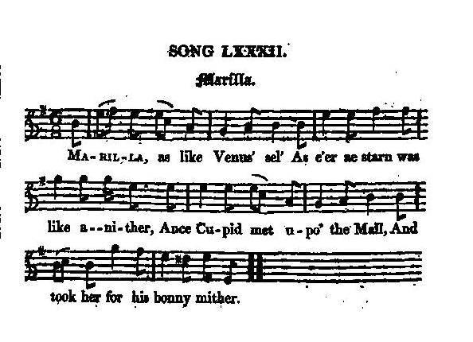

Marilla
The Darien Scheme - Le Projet Darien
Tune - Mélodie"Marilla"
from Hogg's "Jacobite Reliques" part I, N° 82
Sequenced by Christian Souchon

|
To the tune
:
Hogg writes in a note: "I got this likewise out of Mr Scott's collection, though I had several other copies that varied from this but a very little. It is like an English composition; but the air is Scottish, quite original, and belongs, for any thing I know, exclusively to the song..." However, a few words in the lyrics are typical Scots expressions. |
A propos de la mélodie
:
Hogg écrit dans une note: "J'ai également tiré ce morceau de la collection de M. (James?) Scott. J'en avais plusieurs versions à peine différentes. Cela ressemble fort à une composition anglaise; mais l'air est écossais et tout à fait original et, autant que je sache a été créé pour ce chant exclusivement ..." Cependant, le texte contient des mots qui sont typiquement écossais. |

|
MARILLA
Marilla, as like Venus' sel'[1] As e'er ae starn was like anither, Ance Cupid met upo'the Mall, And took her for his bonny mither. He wing'd his way up to her breast; She started; he cried, " Ma'am, 'tis me." The beauty, in o'er rash a jest, Flang the arch cutling in South Sea. [2] Frae hence he raise wi' gilded wings, His bow and shafts to gowd were chang'd. " Deil's i' the sea!" quo' he, " it dings:" Then back to Pall and Mall he rang'd. Breathing mischief, the God look'd gurly; Wi' transfers a' his darts were feather'd: He made a horrid hurly-burly, Where beaux and belles were thickest gather'd. He tentily Marilla sought, And in the thrang 'Change-Alley' got her : He drew his bow, as quick as thought, Wi' a braw new subscription shot her. Source: "The Jacobite Relics of Scotland, being the Songs, Airs and Legends of the Adherents to the House of Stuart" collected by James Hogg, published in Edinburgh by William Blackwood in 1819. |
MARILLA
1. Marilla, jumelle de Vénus, [1] Astres, l'un à l'autre semblables, Te rencontrant sur Pall Mall, Eros T'a prise pour sa mère adorable. 2. Il prend son envol jusqu'à ton sein Tu sursautes. "Mais c'est moi, madame!" Effrayée tu rejettes au loin Jusqu'au Pacifique, archer et arme. [2] 3. Il en sort avec des ailes d'or En or sont changés l'arc et les flèches. "Cet océan m'a jeté un sort!" Il revient vers la belle revêche. 4. Respirant la malice, le dieu - Ses dards ailés provoquent l'échange- Sur beaux et belles à qui mieux-mieux Décoche ses traits, carnage étrange! 5. Il voit Marilla, ce polisson, Dans la Ruelle-au-Change bondée: La jolie nouvelle souscription, Dans son cœur, vite, il l'a décochée! (Trad. Christian Souchon(c)2010) |
|
[1]
Marilla
: this Gaelic name (usually "Muriel") certainly refers to personified Scotland.
[2] South-Sea : the song is about the "Company of Scotland for Africa and the Indies" and the "South-Sea or Darien scheme". (See "A South-Sea Ballad" for detailed explanations). |
[1]
Marilla
: ce prénom gaélique (forme usuelle "Muriel") désigne certainement l'Ecosse personnifiée.
[2] Pacifique : c'est un chant sur la "Compagnie écossaise d'Afrique et des Indes" et le "projet Darien ou du Pacifique". (Cf. "A South-Sea Ballad" pour plus de détail). |
|
|
|